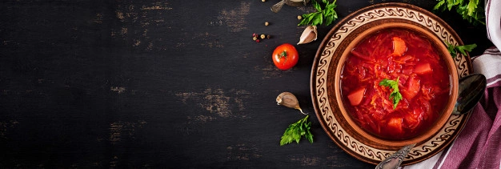
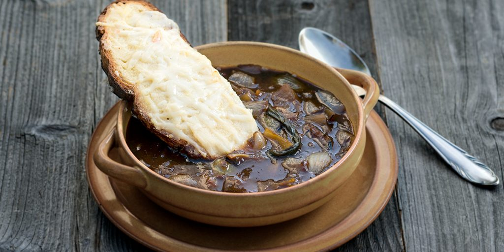

Home About me

Ancor più puzze con la zuppa di cipolle

La ricetta di una zuppa meno famosa, che inserisco solo perché il mio carissimo nonno, pace all'anima sua, la adorava tanto
Una morbida zuppa di cipolle è quanto di più gradevole per riscaldare con gusto e delicatezza una cena autunnale.
Facile da realizzare, questa zuppa di cipolle gratinata è un primo piatto appagante. Da gustare come una coccola.
Grande classico della cucina francese, e famosa in tutto il mondo, la zuppa di cipolle è piuttosto facile da realizzare partendo da pochi e semplici ingredienti: cipolle bianche, o dorate, brodo, burro e farina. Servita in cocotte individuali con fette di pane casereccio e formaggio groviera, viene poi gratinata in forno. Un primo piatto caldo, confortevole e irresistibile!
Ingredienti
- 500g di cipolle bianche
- 500g di brodo di carne caldo
- 2 cucchiai di farina
- olio extra vergine di oliva
- 1 Cucchiaino di zucchero
- 1 Noce di burro
- 1/2 Bicchiere di vino bianco
- Pane casereccio a fette
- 50g di groviera grattuggiato
- 1 foglia di alloro
- timo fresco
Preparazione
- Per realizzare la zuppa di cipolle iniziate ad affettare sottilmente le cipolle e fatele stufare dolcemente in una casseruola con olio e burro per 20-25 minuti mescolando di tanto in tanto per non farle attaccare. Quando saranno diventate trasparenti unite la farina e lo zucchero e mescolate fino a quando la farina prenderà colore. Occorreranno circa 2 minuti.
- Sfumate con il vino bianco e lasciatelo evaporare. Quando non si sentirà più l’odore di alcool unite il brodo caldo e aggiungete l’alloro e il timo. Regolate di sale e pepe e portate ad ebollizione. Coprite la pentola e proseguite la cottura, a fuoco basso per circa 1 ora, mescolando di tanto in tanto.
- Al termine di questo tempo trasferite la zuppa nelle cocotte di coccio individuali, adagiatevi sopra le fette di pane e spolverizzate il tutto con il goviera grattugiato. Passate le cocotte in forno, sotto al grill, fino a quando il formaggio sarà sciolto e lievemente gratinato. Sfornate, guarnite ogni porzione con un giro d'olio a piacere, qualche fogliolina di timo e una spolverata di pepe fresco e servite la zuppa di cipolle fumante.